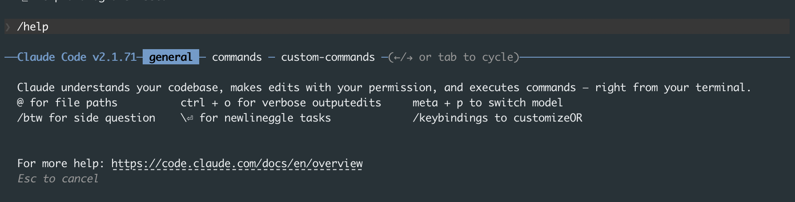
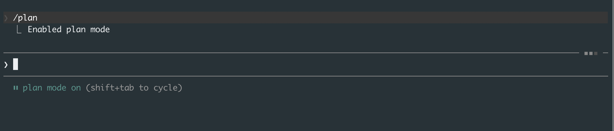
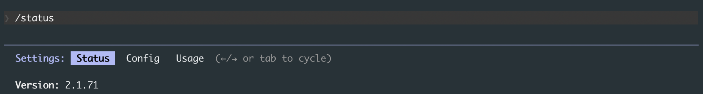

I used GitHub Copilot for about two years. It was fine. Autocomplete on steroids, basically. Then two months ago I tried Claude Code for the first time and it genuinely changed how I write software. Not in a hype-y "this changes everything" way, but in a "wait, I just built in 20 minutes what would have taken me an afternoon" way.
The thing is, to really feel that difference, you have to actually use it. Reading about it doesn't do it justice. So I wanted to write the simplest possible guide to get you from zero to running Claude Code on your own project.
What Is Claude Code?
Claude Code is an AI that lives in your terminal (the black window where you type commands). Unlike ChatGPT or regular Claude on the web, it doesn't just give you text answers. It can actually read your files, edit your code, run commands, install packages, and create new files. When you tell it to fix a bug, it opens the file and changes the code itself.
Think of it like having a programmer sitting next to you who can type really fast, but needs you to tell them what to do.
What You Need Before Starting
Three things:
- A terminal. On Mac, search for "Terminal" in Spotlight. On Windows, use PowerShell. If you've never used a terminal before, Anthropic has a beginner-friendly terminal guide.
- A code project. Any folder with code in it works. Even a folder with a single HTML file.
- A Claude subscription. You need a paid plan (Pro, Max, Teams, or Enterprise). You can sign up at claude.com/pricing.
Step 1: Install It
Open your terminal and paste this command:
Mac or Linux:
curl -fsSL https://claude.ai/install.sh | bash
Windows PowerShell:
irm https://claude.ai/install.ps1 | iex
If you use Homebrew on Mac, you can also do:
brew install --cask claude-code
That's the entire installation. It takes about a minute.
Step 2: Open It in Your Project
Navigate to your project folder in the terminal and type claude:
cd /path/to/your/project
claude
Replace /path/to/your/project with the actual path to your code. For example, if your project is on your Desktop in a folder called "my-app":
cd ~/Desktop/my-app
claude
The first time you run it, it'll ask you to log in. Just follow the prompts. Pick your account, authorize it, and you're done. You only need to do this once.
You should see a welcome screen. You're in.
Step 3: Talk to It
Now you can just type what you want in plain English. Here are some things to try first:
what does this project do?
explain the folder structure
what technologies does this project use?
Claude reads your files automatically. You don't need to copy-paste anything.
Step 4: Ask It to Change Something
This is where it gets interesting. Try something like:
add a hello world function to the main file
Claude will:
- Find the right file
- Show you what it wants to change
- Wait for you to approve
- Make the edit
It always asks permission before changing your files. You'll see a prompt asking you to accept or reject each change.
How to Talk to Claude Code (This Matters a Lot)
The more specific you are, the better the results. Compare these two:
Vague: "Fix the login"
Specific: "The login form in src/login.js doesn't show an error message when the password is wrong. Add an error message that appears below the password field."
The specific version tells Claude exactly where to look and what to do. The vague version makes it guess, and guessing wastes time and tokens.
A good rule: talk to it like you'd talk to a new teammate on their first day. Give context. Point to specific files. Describe the problem clearly.
The Five Commands You Need to Know
You don't need to memorize a lot. These five will cover 90% of what you do:
| What you type | What it does |
|---|---|
/help |
Shows all available commands. Start here if you forget anything. |
/clear |
Clears the conversation and starts fresh. Use this between tasks. |
/init |
Auto-generates a CLAUDE.md file for your project (more on this below). |
/cost |
Shows how much you've spent this session. |
Ctrl+C |
Stops Claude mid-response if it's going in the wrong direction. |
That's it for now. There are more commands, but these are the ones you'll actually use every day.

Useful Shortcuts
A few keyboard tricks that save time:
- Shift+Tab: Toggles plan mode on and off. With plan mode on, Claude will think through the problem and outline a plan without changing any files. Turn it off and Claude can actually edit things. Good habit: start with plan mode on, review the plan, then toggle it off to let Claude make changes.

- Esc Esc (press Escape twice): Interrupts whatever Claude is doing right now. If it's mid-edit or mid-response, this stops it. It won't undo changes already saved to disk, so pair this with git commits for a real safety net.
@in your prompt: Autocompletes file paths. Type@and start typing a filename. Way easier than typing full paths.!before a command: Runs a terminal command without leaving Claude. For example:! npm testor! python main.py.
What Is CLAUDE.md?
When Claude Code starts, it looks for a file called CLAUDE.md in your project folder. This file tells Claude about your project, like a cheat sheet for a new team member.
You can create one automatically by typing /init. Claude will look at your code and generate one. It won't be perfect, but it's a good starting point you can edit.
A simple CLAUDE.md might look like this:
# My Project
A personal portfolio website built with HTML, CSS, and JavaScript.
## How to run it
- Open index.html in a browser
- Or run: python -m http.server 8000
## Project structure
- index.html (main page)
- styles/ (CSS files)
- scripts/ (JavaScript files)
- images/ (image assets)
Keep it short. Under 200 lines. Just include the stuff that isn't obvious from looking at the code.
The One Concept That Matters Most: Context
Claude Code has a memory limit per conversation (about 200,000 tokens). Every file it reads, every command it runs, every response it gives fills up that memory. When it fills up, Claude starts forgetting earlier parts of the conversation.
This is why /clear exists. Use it often. Finished fixing a bug? Type /clear before moving to the next thing. Think of each task as a separate conversation.
If you want to check how much memory you've used, type /status and tab over to the Usage section. It shows a breakdown of your context usage.

Let Claude Check Its Own Work
Here's a trick that makes a big difference. Don't just ask Claude to write code. Ask it to write code AND test it.
Instead of:
write a function that adds two numbers
Try:
write a function that adds two numbers, then run it with a few test cases to make sure it works
When Claude can see the output of what it just wrote, it catches its own mistakes. This turns it from "write and hope" into "write and verify."
Save Your Work Often
When Claude makes changes, commit them to git frequently. Here's why: if Claude makes a bunch of changes and something goes wrong, you want a recent save point to go back to.
A simple workflow:
- Ask Claude to do something
- Review the changes (you can ask:
what files have I changed?) - If they look good, ask Claude:
commit my changes with a descriptive message - Move to the next task
Don't let changes pile up without committing. Small, frequent saves are your safety net.
Quick Recap
- Install with one command
cdinto your project and typeclaude- Talk to it in plain English, be specific
- Use
/clearbetween tasks - Let Claude test its own work
- Commit often
That's genuinely all you need to get started. Everything else you'll pick up as you go.
If you want to go further after you're comfortable with the basics, I wrote a follow-up on advanced workflows, agents, and power-user features.